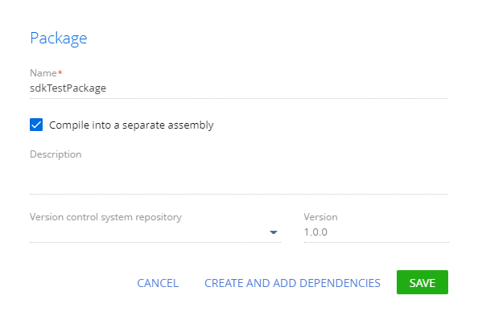
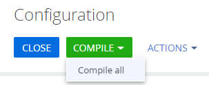
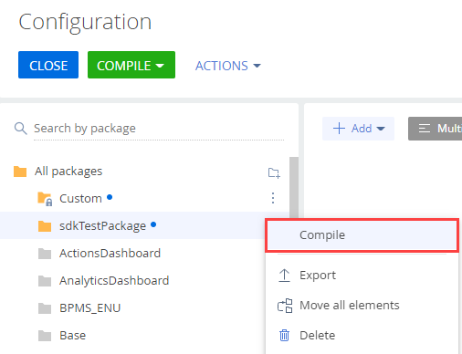
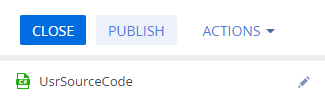
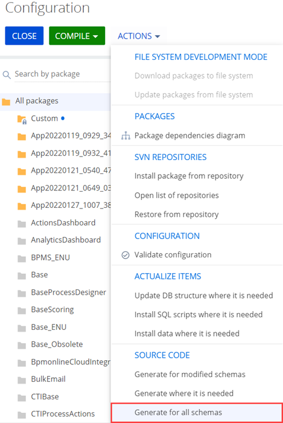
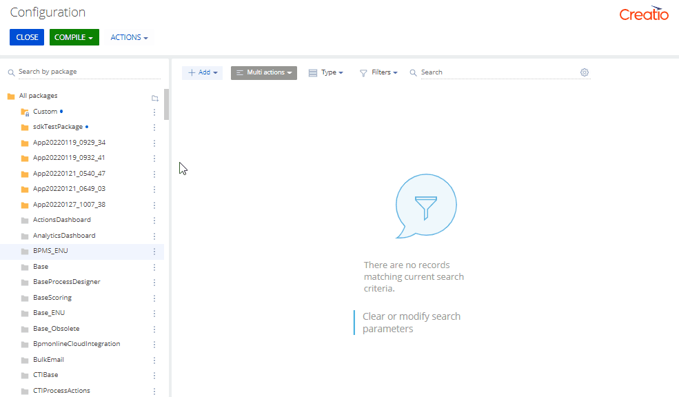
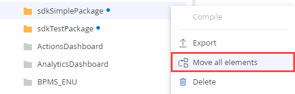
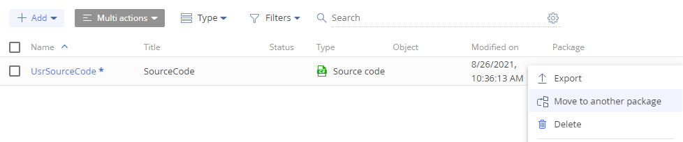

Пакет-сборка — пакет, исходный и автогенерируемый код которого компилируется в отдельную сборку. Начиная с версии 8.0 Creatio Atlas при создании нового пакета по умолчанию создается пакет-сборка. Это позволяет быстрее и удобнее переносить изменения между средами.
Назначение пакета-сборки:
- Увеличение скорости разработки за счет снижения времени компиляции, поскольку компилируется только пакет-сборка.
- Увеличение скорости поставки функциональности за счет отсутствия необходимости компиляции, поскольку пакет-сборка содержит в себе предварительно скомпилированную часть.
Особенности пакета-сборки:
- Не поддерживается доступ к объектам по протоколу OData версии 3. Для доступа к объектам в пакете-сборке используется протокол OData версии 4. Протокол OData описан в статье OData.
- Не допускается реализация бизнес-логики объектов через событийные подпроцессы дизайнера объекта. Для работы с событийной моделью необходимо использовать EntityEventListener. Набор событий EntityEventListener не полностью соответствует событийной модели, доступной через Creatio IDE. Событийный слой Entity описан в статье Бизнес-логика объектов.
- В C#-коде пакетов не допускается использование типов Entity (например, приведение к этим типам), создание экземпляров этих типов через оператор new или при помощи рефлексии. Не зависимо от того, где создана эта Entity.
- Новые колонки и методы объектов Entity, которые размещены в пакете-сборке, не доступны через базовый класс Entity (например, ColumnValues.GetByName(nameValues)).
- Типы текущего пакета-сборки не доступны в конфигурации и доступны для других пакетов-сборок, которые зависят от текущего.
Структура и зависимости пакета-сборки
Структура пакета-сборки в файловой системе не отличается от структуры простого пакета. Основное отличие пакета-сборки от простого пакета — значение свойств Type (тип пакета) и ProjectPath (относительный путь от корневого каталога пакета к файлу проекта пакета-сборки) файла descriptor.json. Структура простого пакета описана в статье Общие принципы работы с пакетами.
Вспомогательные файлы пакета-сборки создаются или актуализируются:
- При выгрузке пакета-сборки в файловую систему, если режим разработки в файловой системе включен.
- При компиляции пакета-сборки, если режим разработки в файловой системе выключен.
- При фиксации пакета-сборки в системе контроля версий, независимо от статуса режима разработки в файловой системе.
Вспомогательные файлы пакета-сборки:
- [Имя пакета].csproj — файл проекта, который содержит компилируемое содержимое пакета-сборки.
- Directory.Build.targets — файл, который используется для исключения содержимого пакета-сборки из компиляции основной конфигурации.
Пакет-сборка позволяет ссылаться на внешние сборки.
Чтобы для пакета-сборки настроить ссылку на внешнюю сборку:
- Откройте файл [Имя пакета].csproj пакета-сборки.
- Добавьте необходимую внешнюю сборку в любую секцию файла. Исключением является секция Label="Package References", содержимое которой генерируется автоматически.
Пример настройки ссылок на Quartz и внешнюю библиотеку, которая содержится в каталоге ...\Terrasoft.Configuration\Lib приведен ниже.
Содержимое файла [Имя пакета].csproj пакета-сборки допускается менять вручную. Исключением является секция Label="Package References", содержимое которой генерируется автоматически.
При компиляции через Creatio IDE TargetFramework проекта соответствует TargetFramework ядра. При компиляции через внешнюю IDE используется значение по умолчанию "net472", которое при необходимости можно изменить.
В отличие от основного проекта конфигурации, в проект пакета-сборки не включены сторонние библиотеки. Для работы со сторонними библиотеками в файл проекта пакета-сборки подключите абстракции ядра или внешние сборки пакета.
Секции со ссылками, которые содержатся в пакете-сборке:
- Системные библиотеки.
- Внешние сборки пакета (<ItemGroup Label="Package Assembly References"></ItemGroup>).
- Библиотеки ядра (<ItemGroup Label="Core References"></ItemGroup>).
- Библиотеки зависимых пакетов (<ItemGroup Label="Package References"></ItemGroup>).
- Внешние сборки (<ItemGroup Label="3rd Party References"></ItemGroup>).
Операции с пакетом-сборкой
Creatio позволяет создать, компилировать и удалить пакет-сборку.
Создать пакет-сборку
- В приложении на платформе .NET Framework перейдите в дизайнер системы по кнопке
 .
. - В блоке Конфигурирование разработчиком (Admin area) перейдите по ссылке Управление конфигурацией (Advanced settings).
- В области работы с пакетами нажмите кнопку .
-
Установите признак Компилировать в отдельную сборку (Compile into a separate assembly). Начиная с версии 8.0 Creatio Atlas, признак установлен по умолчанию.
 - Cоздайте пакет-сборку и установите его зависимости.
- Разработайте пользовательскую функциональность.
- В приложении на платформе .NET Framework выполните компиляцию пакета-сборки. Компиляция пакета-сборки описана в пункте Компилировать пакет-сборку.
- Перенесите пакет-сборку на другую рабочую среду на платформе .NET Core.
- Выполните компиляцию перенесенного пакета-сборки. Компиляция пакета-сборки описана в пункте Компилировать пакет-сборку.
Очередность использования платформ (.NET Framework и .NET Core) для разработки пакета-сборки не имеет значения. Важно выполнить компиляцию пакета-сборки в приложениях на платформах .NET Framework и .NET Core. Это позволит пользователям использовать пакет-сборку в приложениях на платформах .NET Framework и .NET Core.
В результате пакет-сборка будет доступен для поставки конечным пользователям.
Компилировать пакет-сборку
Назначение компиляции пакета-сборки — ускорение разработки, поскольку отсутствует необходимость перекомпиляции всей конфигурации. Creatio позволяет выполнить компиляцию пакета-сборки, который содержит схемы клиентских модулей (т. е. схемы с JavaScript-кодом).
Виды компиляции пакета-сборки:
-
Компиляция конфигурации и всех пакетов-сборок.
Выполняется нажатием кнопки Перекомпилировать все (Compile all) в выпадающем списке кнопки Компилировать (Compile) панели инструментов Creatio IDE.
 -
Компиляция текущего пакета-сборки.
-
Выполняется выбором пункта Компилировать (Compile) меню пакета Creatio IDE.
 -
Выполняется нажатием кнопки Опубликовать (Publish) в дизайнере исходного кода. Если редактируемая схема типа Исходный код (Source code) находится в пакете-сборке, то будет выполнена компиляция только пакета-сборки, а не всей конфигурации. В другом случае будет выполнена компиляция всей конфигурации.

-
В результате пакет-сборка будет скомпилирован. Если при компиляции пакета-сборки будет обнаружено отсутствие пакетов-сборок, от которых зависит текущий пакет-сборка, то приложение также выполнит их компиляцию.
Скомпилированный пакет-сборка будет сохранен в:
- Для приложений на платформе .NET Framework ...\Terrasoft.WebApp\
Terrasoft.Configuration\ Pkg\ [Имя пакета]\ Files\ Bin\ [Имя пакета].dll. - Для приложений на платформе .NET Core ...\Terrasoft.WebApp\
Terrasoft.Configuration\ Pkg\ [Имя пакета]\ Files\ Bin\ netstandard\ [Имя пакета].dll.
Удалить пакет-сборку
Удаление пакета-сборки не отличается от удаления простого пакета и выполняется в пункте Удалить (Delete) меню пакета Creatio IDE.
Об удалении простого пакета читайте в статье Принципы разработки в Creatio IDE.
В результате пакет-сборка будет удален из конфигурации приложения.
Конвертация пакетов
Виды конвертации, которые позволяет выполнять Creatio:
- Конвертация простого пакета в пакет-сборку.
- Конвертация пакет-сборки в простой пакет.
Конвертация пакетов доступна для on-site приложений, поскольку требует доступа к базе данных. Для приложений cloud можно выполнить перемещение отдельных конфигурационных элементов в пакет-сборку.
Конвертировать простой пакет в пакет-сборку
Способы конвертации простого пакета в пакет-сборку:
- Ручная конвертация. Доступна для Creatio версий 7.18.3-7.18.5.
- Автоматическая конвертация. Доступна для версии 8.0 Creatio Atlas и выше. Рекомендуемый способ.
Чтобы вручную конвертировать простой пакет в пакет-сборку:
- Подготовьте конфигурационные элементы простого пакета к конвертации, переписав код в соответствии с особенностями пакета-сборки.
-
С помощью SQL-запроса подготовьте простой пакет к конвертации в пакет-сборку.
Этот запрос выполнит переход в таблицу [SysPackage] базы данных. Действия, которые выполняются при выполнении запроса:
- Изменение значения колонки [Type] с "0" (простой пакет) на "1" (пакет-сборка).
- Заполнение колонки [ProjectPath]. Имя проекта должно совпадать с именем пакета.
- Актуализация значения колонки [ModifiedOn].
- При необходимости, добавьте ссылки на внешние сборки.
- Перезагрузите приложение. Это необходимо, чтобы сбросить кэш.
-
Выполните генерацию всех схем простого пакета и его дочерних схем.
- Перейдите в раздел Конфигурация (Configuration).
-
В меню действий в группе Исходный код (Source code) выберите Сгенерировать для всех схем (Generate for all schemas).

- Выполните компиляцию конфигурации.
Конвертация простого пакета в пакет-сборку для версии 8.0 Creatio Atlas и выше подразумевает изменение признака Компилировать в отдельную сборку (Compile into a separate assembly) в свойствах простого пакета.
Чтобы автоматически конвертировать простой пакет в пакет-сборку:
- В меню пакета выберите Свойства (Properties).
- Установите признак Компилировать в отдельную сборку (Compile into a separate assembly).
-
Для применения изменений нажмите Применить (Apply).
Действия, которые выполняются при сохранении свойств пакета:
- Изменение в базе данных типа пакета (значение колонки [Type]). При установленном признаке Компилировать в отдельную сборку (Compile into a separate assembly) значение меняется с "0" (простой пакет) на "1" (пакет-сборка). При неустановленном признаке — с "1" (пакет-сборка) на "0" (простой пакет).
- Удаление файлов пакета-сборки при неустановленном признаке Компилировать в отдельную сборку (Compile into a separate assembly).
- Генерация всех требующих генерации схем.
-
При необходимости выполните компиляцию конфигурации. Уведомление о необходимости выполнения компиляции отобразится в информационном окне.
В результате простой пакет будет конвертирован в пакет-сборку.
Конвертировать пакет-сборку в простой пакет
- Перейдите в базу данных и в таблице [SysPackage] найдите пакет-сборку, который планируется конвертировать в простой пакет.
-
С помощью SQL-запроса актуализируйте значения колонок [Type], [ProjectPath], [ModifiedOn].
-
В каталоге ...\Terrasoft.WebApp\
Terrasoft.Configuration\ Pkg\ [Имя пакета] пакета-сборки удалите каталоги: - Autogenerated
- Files\
Bin - Files\
obj
-
В каталоге ...\Terrasoft.WebApp\
Terrasoft.Configuration\ Pkg\ [Имя пакета] пакета-сборки удалите файлы: - Files\
[Имя пакета].csproj - Files\
Directory.Build.targets
- Files\
- Перезагрузите приложение. Это необходимо, чтобы сбросить кэш.
-
Выполните генерацию всех схем простого пакета и его дочерних схем.
- Перейдите в раздел Конфигурация (Configuration).
-
В меню действий в группе Исходный код (Source code) выберите Сгенерировать для всех схем (Generate for all schemas).
- Выполните компиляцию конфигурации.
В результате пакет-сборка будет конвертирован в простой пакет.
Переместить конфигурационные элементы в пакет-сборку
- Подготовьте конфигурационные элементы к перемещению в пакет-сборку, переписав код в соответствии с особенностями пакета-сборки.
- Создайте пакет-сборку. Создание пакета-сборки описано в пункте Создать пакет-сборку.
- Установите зависимости пакета-сборки. Зависимости пакета-сборки должны совпадать с зависимостями простого пакета, из которого планируется переместить конфигурационные элементы.
-
Выполните перемещение конфигурационных элементов.
-
Чтобы переместить все конфигурационные элементы, в меню пакета, из которого планируется переместить конфигурационные элементы, нажмите Переместить все элементы (Move all elements).
 -
Чтобы переместить отдельный конфигурационный элемент, в меню конфигурационного элемента нажмите Переместить в другой пакет (Move to another package).

-
- Выполните компиляцию конфигурации.
- Обновите зависимости дочерних пакетов: замените родительский пакет на пакет-сборку, в который были перенесены конфигурационные элементы.
В результате конфигурационные элементы будут перемещены в пакет-сборку.
Импорт пакета-сборки
Импорт пакета-сборки не отличается от импорта простого пакета. Об импорте простого пакета читайте в статье Перенос пакета.
Особенности импорта пакета-сборки:
- Содержимое пакета-сборки помещается в базу данных.
- Копируется файловый контент пакета-сборки.
- Компиляция конфигурации не запускается, поскольку пакет-сборка был скомпилирован при разработке и содержит в себе runtime-сборку.
- Выполняется перезапуск сайта, инициализация веб-сервисов и фабрики классов, которые содержатся в пакете-сборке.